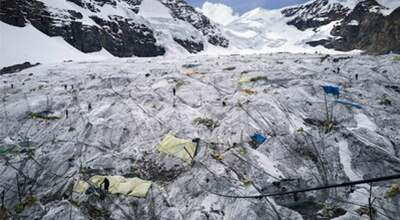
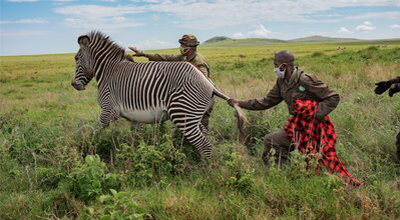
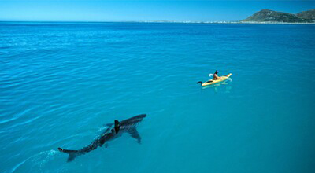

본문콘텐츠영역
ISSUE
-
Too hot to live: Millions worldwide will face unbearable temperatures
A warming climate is likely to push entire regions out of their comfort zones—and make staying cool a matter of survival.
-
The human body has evolved to shed heat in two main ways: Blood vessels swell, carrying heat to the skin so it can radiate away, and sweat erupts onto the skin, cooling it by evaporation. When those mechanisms fail, we die. It sounds straightforward; it’s actually a complex, cascading collapse.
As a heatstroke victim’s internal temperature rises, the heart and lungs work ever harder to keep dilated vessels full. A point comes when the heart cannot keep up. Blood pressure drops, inducing dizziness, stumbling, and the slurring of speech. Salt levels decline and muscles cramp. Confused, even delirious, many victims don’t realize they need immediate help.
With blood rushing to overheated skin, organs receive less flow, triggering a range of reactions that break down cells. Some victims succumb with an internal temperature of just 104 degrees Fahrenheit (40 degrees Celsius); others can withstand 107 degrees for several hours. The prognosis is usually worse for the very young and for the elderly. Even healthy older people are at a distinct disadvantage: Sweat glands shrink with age, and many common medications dull the senses. Victims often don’t feel thirsty enough to drink. Sweating stops being an option, because the body has no moisture left to spare. Instead, sometimes it shivers.
BY ELIZABETH ROYTE
-
MAGAZINE FROM THE EDITOR
The world is getting hotter. We must adapt to it equitably.
-

MAGAZINE PLANET POSSIBLE
Gold is a toxic lure in the world’s highest settlement
-

MAGAZINE CORONAVIRUS COVERAGE
How wildlife conservation in northern Kenya survived the pan…
-

MAGAZINE THROUGH THE LENS
My shark photo took over the internet, inspiring countless fake…